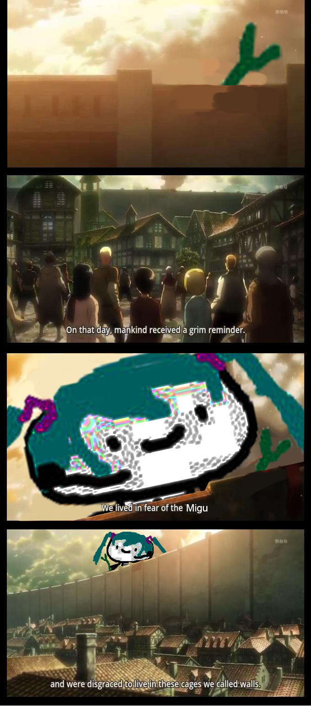
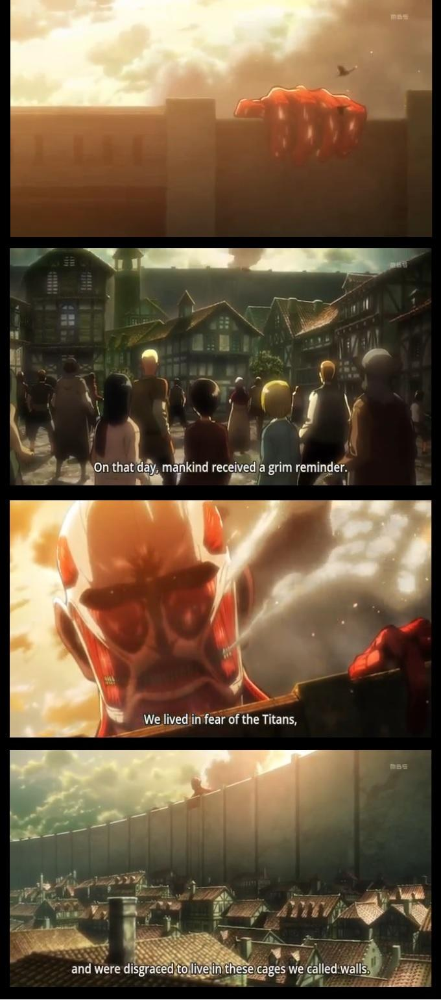
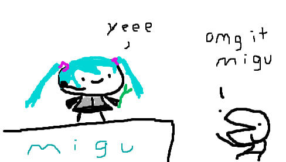

I wanted to use Attack on Titan as the base for the meme, specifically, the "grim reminder" scene because I keep seeing that template used a lot around Twitter back in the day. I used "migu" as the titan because I love this silly little drawing of Hatsune Miku and I see this drawing all the time, it's really cute. I tried to make it very dramatic, by turning down the brightness on migu, and I tried to play around with the saturation, but in the end, it only affected her hair and not her face. I really like what I did with this, even though it is simple, I still find a chuckle out of it.

